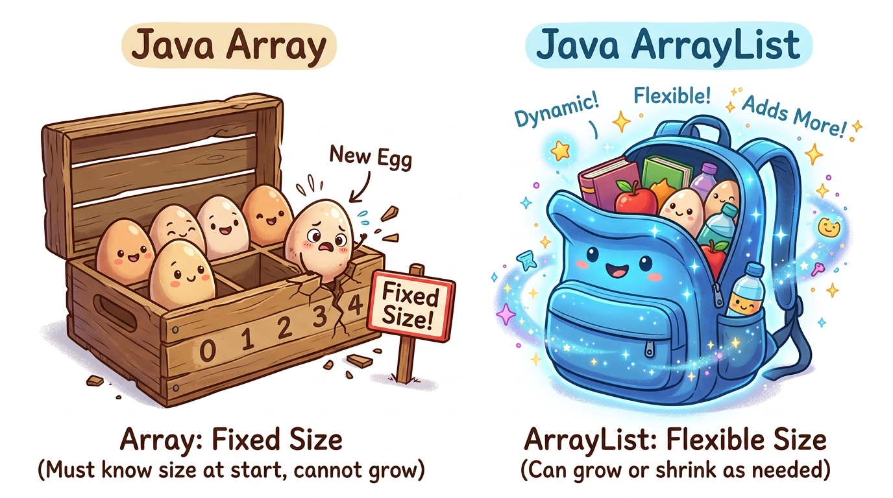
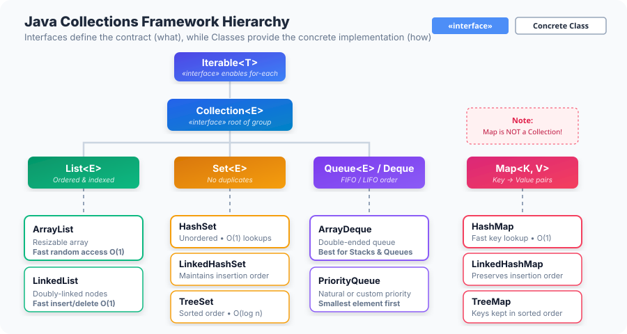
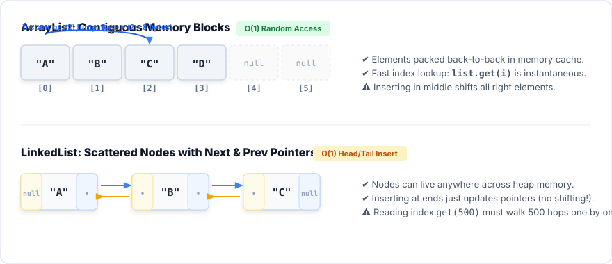
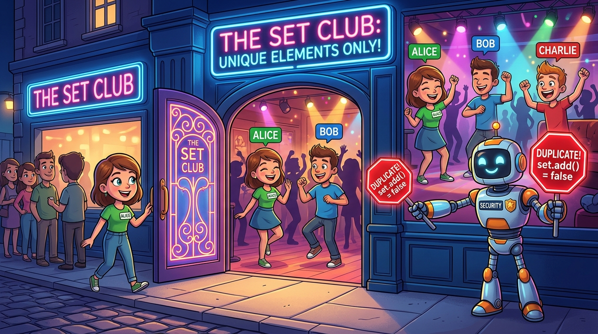
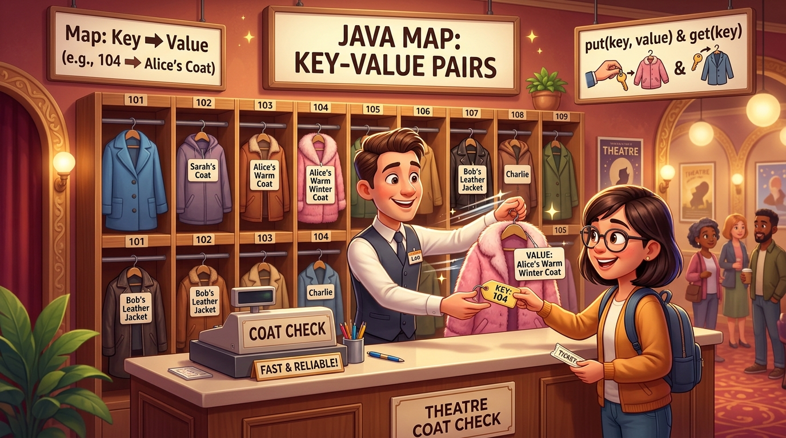
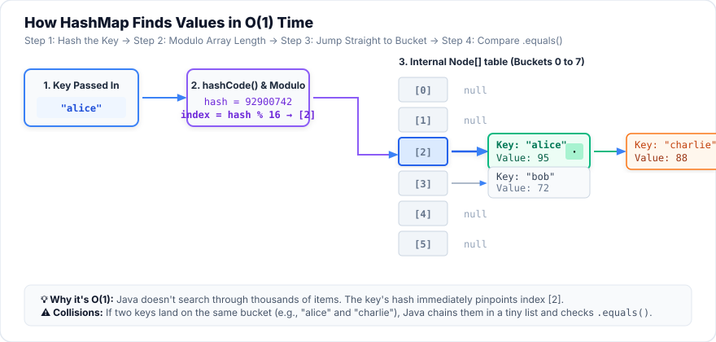
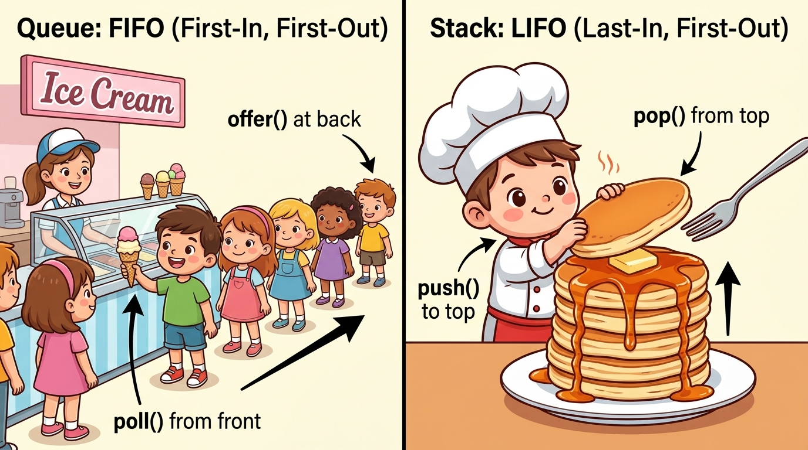

Session 1 — Java Utility APIs
Real programs juggle groups of things: all the students in a class, every item in a
shopping cart, the people waiting in a queue. Today you learn the ready-made tools Java gives you
for holding and organising groups of data: Lists, Sets, Maps, Queues and the
Arrays helper class. They all live in one package called java.util.
- Explain what the
java.utilpackage is and name its main groups of classes. - Explain the List interface and choose between
ArrayListandLinkedList. - Explain the Set interface and predict the order a
HashSet,LinkedHashSetandTreeSetwill print. - Explain the Map interface and use a
HashMap/TreeMapto look things up and count things. - Explain Queues (FIFO), Stacks (LIFO) and PriorityQueues, and use the
Arraysclass to sort, search and copy arrays. - Build a working console program (Assignment A1) that uses all of the above, and debug the most common collection errors.
Your Roadmap for Today
This session has seven short parts. Each one builds on the one before it. Do them in order.
java.util package
What is a collection?
Lists
Sets
Maps
Queues & Stacks
Arrays & Collections helpers
Every coloured box has a job:
- Purple 🎭 Analogy — an everyday comparison. Read it before the code.
- Blue ✦ Key Point — the one thing to remember from that part.
- Green 💡 Tip — a helpful habit. Orange ⚠️ Warning — a trap beginners fall into.
- 📚 New words boxes explain every new term the first time it appears.
- Every code example has line numbers and a "Line by line" table below it that explains each line in plain English, followed by the real output Java prints.
Don't just read — type the examples yourself in IntelliJ. Your fingers learn faster than your eyes.
Before You Start: Get the Example Code Running
All 16 examples on this page are real Java files in the course folder, and every output shown here was produced by actually running them. You have two ways to follow along:
code/s01-java-utility-apis (the folder that contains pom.xml). Click OK. If asked, choose Trust Project.src → main → java → com.aptech.s01. You will see files E01_… to E16_….E01_ArrayVsArrayList. Next to the line public static void main there is a small green ▶ triangle in the left margin. Click it and choose Run. The output appears in the Run window at the bottom.Option B — type everything into your own new project
- File → New → Project… → choose Java on the left, name it
session01, build system IntelliJ, pick your JDK, tick Add sample code, click Create. - Right-click the
srcfolder → New → Java Class → type the class name exactly as in the example (for exampleE02_ArrayListBasics) and press Enter. - Type the code, but leave out the first line (
package com.aptech.s01;) because your class is not inside that package folder. - Click the green ▶ next to
mainto run.
Why This Matters
Open any app on your phone. WhatsApp shows a list of chats. Instagram knows which accounts you follow and never lets you follow the same one twice (a set). Your contacts app finds a phone number when you type a name (a map). A printer prints documents in the order they arrived (a queue). Every one of these apps is built on exactly the tools you learn today.
Later in this course you will build JavaFX desktop apps with tables of students, drop-down menus and charts. Every one of those screen components is fed by a Java collection. If you understand this session, everything that comes later gets easier.
Think of your data as food and the collections as kitchen containers. You would not keep eggs, soup and spices in the same kind of container:
- An egg tray has numbered slots and keeps things in order → a List.
- A spice rack has exactly one jar of each spice, never two of the same → a Set.
- A labelled jar shelf, where you find the jar by reading its label ("Sugar", "Salt") → a Map.
- A plate dispenser or a queue at the canteen, where you take from one end → a Queue / Stack.
Choosing the right container makes the job easy. Choosing the wrong one makes it painful. Programming is the same.
- API (Application Programming Interface)
- A set of ready-made classes and methods that someone else wrote so you can use them instead of writing everything yourself. "Java Utility APIs" means Java's ready-made helper tools.
- Utility
- A general-purpose helper, like a utility knife: useful in many different situations.
- Collection
- An object whose job is to hold a group of other objects, for example a list of names.
- Element
- One item stored inside a collection. In a list of names,
"Ada"is an element.
Part 1 — The java.util Package
What is a package?
Java comes with thousands of ready-made classes. To keep them organised, Java groups related classes into packages. A package is basically a folder of classes that belong together.
java.io (reading and writing files),
java.sql (databases), java.time (dates) and java.util, the
"household essentials" aisle, full of everyday helpers you will use in almost every program.
Using a class from a package: import
Before you can use a class from java.util, you tell Java where to find it with an
import line at the top of your file (after the package line, before the class).
importkeyword: "I want to use a class from somewhere else"
java.utilthe package (the "aisle")
.separator
ArrayListthe class you want (the "product")
;every statement ends with a semicolon
import java.util.ArrayList; // bring in just ArrayList
import java.util.HashMap; // bring in just HashMap
import java.util.*; // bring in EVERY class in java.util (the * means "all")ArrayList in your code. If it turns red, click on the word and press
Alt+Enter → Import class. IntelliJ adds the correct import line at the top.
Professionals import each class separately (not with *) so that a reader can see exactly what is used.
String or System?
They live in java.lang, the one package Java imports automatically into every file, because every program needs it.
What's inside java.util?
The package has around a hundred public classes and interfaces, but they fall into a few simple groups. Today we focus on the first two rows:
| Group | Examples | What they do | When you learn it |
|---|---|---|---|
| The Collections Framework | List, ArrayList, Set, HashSet, Map, HashMap, Queue, ArrayDeque… | Hold and organise groups of objects | Today (Parts 2–6) |
| Helper ("utility") classes | Arrays, Collections, Objects | Static methods that sort, search, copy and compare | Today (Part 7) |
| Everyday tools | Scanner, Random, Optional, StringJoiner, UUID | Keyboard input, random numbers, "maybe-empty" values, joining text | Taste today (Example 16); used all course |
| Legacy (old) classes | Vector, Stack, Hashtable, Enumeration, BitSet | The original tools from Java 1.0; still found in old code | Session 11 |
| Concurrency (sub-package) | java.util.concurrent | Collections that are safe when many threads share them | Sessions 4–5 |
| Old dates | Date, Calendar | Replaced by the better java.time package | Use java.time instead |
Example 16 — a quick tour of four everyday tools
Before the collections, here are four small helpers so you can see how a java.util class is used: import it, create an object with new (or call a static method on the class), then call its methods.
package com.aptech.s01;
import java.util.Objects;
import java.util.Optional;
import java.util.Random;
import java.util.StringJoiner;
/**
* Example 16 — A quick tour of other useful java.util classes (not collections).
*/
public class E16_UtilityTour {
public static void main(String[] args) {
// Random: pseudo-random numbers. A fixed "seed" gives the same numbers every run.
Random dice = new Random(42);
System.out.print("Dice rolls: ");
for (int i = 0; i < 5; i++) {
System.out.print((dice.nextInt(6) + 1) + " "); // nextInt(6) gives 0..5
}
System.out.println();
// StringJoiner: build "a, b, c" without fiddly comma logic
StringJoiner sj = new StringJoiner(", ", "[", "]");
sj.add("Java").add("SQL").add("JavaFX");
System.out.println("Skills: " + sj);
// Objects: null-safe helpers
String nickname = null;
System.out.println("Equal? " + Objects.equals(nickname, "Ace")); // no NullPointerException
System.out.println("Name: " + Objects.requireNonNullElse(nickname, "Guest"));
// Optional: a box that may or may not contain a value
Optional<String> found = Optional.of("Ada");
Optional<String> missing = Optional.empty();
System.out.println("Found: " + found.orElse("nobody"));
System.out.println("Missing: " + missing.orElse("nobody"));
}
}| Line | What it does, in plain English |
|---|---|
| 1 | package says which folder (package) this class lives in. Every example today is in com.aptech.s01. |
| 3–6 | Four import lines: "I will use Objects, Optional, Random and StringJoiner from java.util." |
| 8–10 | A comment (starts with /**, ends with */). Java ignores it; it's a note for humans. |
| 11–12 | The class and the main method — the program starts running at line 13. |
| 14 | Creates a Random object called dice. The 42 is a seed: the starting point for the "random" sequence. Same seed → same numbers every run (great for testing). Write new Random() with no seed for different numbers each time. |
| 16–18 | A loop that runs 5 times. dice.nextInt(6) gives a whole number from 0 to 5 (6 possibilities, starting at 0), so we add 1 to get a dice value from 1 to 6. |
| 22 | A StringJoiner glues pieces of text together. Its three settings are: put ", " between pieces, "[" at the start, "]" at the end. |
| 23 | Adds three pieces. Each add(...) returns the same joiner, so the calls can be chained one after another. |
| 27 | A String variable that holds null, which means "no object at all". |
| 28 | Objects.equals(a, b) compares two values safely. Writing nickname.equals("Ace") would crash with a NullPointerException because you cannot call a method on nothing. |
| 29 | "Give me nickname, or if it is null, use "Guest" instead." |
| 32–35 | An Optional is a box that either holds a value or is empty. orElse("nobody") means "give me what's inside, or "nobody" if the box is empty." You'll see this in real APIs (and in JavaFX dialogs later). |
Real output:
Your dice rolls will be exactly the same as above, because the seed is fixed at 42. Change it to new Random() and run it a few times to see the difference.
java.util is Java's toolbox of everyday helpers. You import a class from it, then use it.
Its most important tools are the collections, which is what the rest of this session is about.
ArrayList and IntelliJ underlines it in red with "Cannot resolve symbol 'ArrayList'". What is the most likely fix?ArrayList lives in java.util, which is not imported automatically (only java.lang is). Java names are case-sensitive, so Arraylist would be a different, non-existent name.Part 2 — The Big Picture: What Is a Collection?
The problem with arrays
In the Bridge lessons you stored many values in an array, for example
String[] seats = new String[3];. Arrays are fast and simple, but they have one big weakness:
their size is fixed forever the moment you create them. If you made room for 3 names and a
4th person arrives, there is no room. You would have to create a bigger array and copy everything across by hand.

ArrayList is like a magical expanding backpack: add as much as you like, and it automatically stretches to fit!
Example 1 — array vs ArrayList, side by side
package com.aptech.s01;
import java.util.ArrayList;
import java.util.Arrays;
import java.util.List;
/**
* Example 1 — Why do we need collections at all?
* An array has a FIXED size. An ArrayList grows and shrinks for you.
*/
public class E01_ArrayVsArrayList {
public static void main(String[] args) {
// ---- The old way: an array with a fixed size of 3 ----
String[] seats = new String[3];
seats[0] = "Ada";
seats[1] = "Ben";
seats[2] = "Chi";
// seats[3] = "Dan"; // would crash: ArrayIndexOutOfBoundsException
System.out.println("Array: " + Arrays.toString(seats));
// ---- The collection way: an ArrayList grows automatically ----
List<String> names = new ArrayList<>();
names.add("Ada");
names.add("Ben");
names.add("Chi");
names.add("Dan"); // no problem — it just grows
System.out.println("ArrayList: " + names);
System.out.println("Size now: " + names.size());
names.remove("Ben"); // removing is one line, the gap closes by itself
System.out.println("After remove: " + names);
}
}| Line | What it does, in plain English |
|---|---|
| 3–5 | Imports ArrayList, Arrays (a helper for printing arrays) and List. |
| 14 | Makes an array with exactly 3 empty slots for Strings. That number 3 can never change. |
| 15–17 | Fills slots 0, 1 and 2. (Counting starts at 0, so the last slot of a 3-slot array is number 2.) |
| 18 | Commented out on purpose. If you remove the //, the program crashes because slot 3 does not exist. |
| 19 | Printing an array directly shows gibberish like [Ljava.lang.String;@1b6d3586, so we use the helper Arrays.toString(...) to print it nicely. |
| 22 | Creates an empty ArrayList that will hold Strings. Notice there is no size in the brackets: it starts empty and grows. (The next section explains every word of this line.) |
| 23–26 | add(...) puts a name at the end of the list. The 4th name is no problem at all. |
| 27 | A list prints nicely all by itself, no helper needed. |
| 28 | size() tells you how many elements are in the list right now. (Arrays use .length; lists use .size().) |
| 30 | remove("Ben") finds Ben and removes him. Everyone after Ben moves up one place, so there is no empty hole. |
So what exactly is a "collection"?
A collection is an object that holds a group of other objects and gives you methods to add, remove, find and loop over them. Java's Collections Framework is the complete family of these tools. It has three parts:
- Interfaces: the rules, such as "a List must keep things in order and let you get item number 5".
- Implementations (classes): the actual working containers that follow those rules, such as
ArrayListandLinkedList. - Algorithms: ready-made operations such as sorting and searching (the
CollectionsandArrayshelper classes).
Interface vs class: the most important idea today
A company posts a job advert: "Driver wanted. Must be able to: start the car, drive to an address, park." The advert is not a person. It is a list of promises. That is an interface.
Then real people apply: Musa drives a small fast car, Kemi drives a big van. Both can do everything the advert asks, each in their own way. Those people are classes (implementations).
In Java: List is the advert (interface). ArrayList and LinkedList are two employees (classes) who both do the "List" job, but work differently inside.
That is why the "standard" way to create a collection looks like this. Let's take it apart word by word:
Listthe TYPE of the variable: the interface (the job advert)
<String>what goes inside: only Strings (a label on the box)
namesyour variable's name
=store the new object in the variable
newcreate a new object
ArrayListthe actual CLASS doing the work (the employee)
<>()"diamond": Java copies <String> from the left side
List<String> names = new ArrayList<>(); // recommended: variable type is the interface
ArrayList<String> names2 = new ArrayList<>(); // also works, but less flexible
Why prefer List on the left? Because later you can swap the employee without
changing the rest of your program: change new ArrayList<>() to new LinkedList<>()
and every line that uses names still works, because both follow the same List rules.
Professionals call this "programming to the interface".
- Interface
- A list of methods a class promises to have, without the code that does the work. Examples:
List,Set,Map,Queue. You cannot writenew List(), the same way you cannot hire a job advert. - Implementation / implementing class
- A real class that keeps the promises of an interface:
ArrayListimplementsList. - Generics — the
<String>part - Tells Java what type of element the collection may hold.
List<String>accepts only Strings; trying to add a number is a compile error. You'll master generics in Session 2. For today, just read<X>as "of X":List<String>= "a list of Strings". - Diamond
<> - Short-hand on the right side: Java fills in the type from the left side for you.
Collections hold objects, so use Integer, not int
Collections can only hold objects, never the 8 "primitive" types (int, double, char…).
Every primitive has an object twin called a wrapper class. Java converts between them automatically
(this is called autoboxing and unboxing), so in practice you only have to remember to write the wrapper name inside the < >.
| Primitive | Wrapper class (use inside < >) | Example |
|---|---|---|
int | Integer | List<Integer> scores = new ArrayList<>(); |
double | Double | List<Double> prices = new ArrayList<>(); |
char | Character | Set<Character> letters = new HashSet<>(); |
boolean | Boolean | Map<String, Boolean> paid = new HashMap<>(); |
long, float, short, byte | Long, Float, Short, Byte | same idea |
List<Integer> scores = new ArrayList<>();
scores.add(90); // autoboxing: the int 90 is wrapped into an Integer object for you
int first = scores.get(0); // unboxing: the Integer is unwrapped back into an int for you
// List<int> nums; // COMPILE ERROR: "unexpected type, required: reference, found: int"The family tree
Here is how all the collection types are related. Dashed blue boxes are interfaces (the rules),
solid green boxes are classes (the ones you actually create with new). Don't try to
memorise it now. Come back to it at the end of the session and it will make sense.

new. Note that Map lives in its own separate hierarchy because it stores Key → Value pairs rather than individual elements.
Methods that every collection has
Because List, Set and Queue all come from Collection, they share these methods. Learn them once, use them everywhere:
| Method | What it does | Returns |
|---|---|---|
add(x) | Put x into the collection | true if the collection changed (a Set returns false for a duplicate) |
remove(x) | Take x out (the first match) | true if something was removed |
contains(x) | Is x in there? | true / false |
size() | How many elements right now | an int |
isEmpty() | Is it empty? | true / false |
clear() | Remove everything | nothing (void) |
addAll(other) | Add every element of another collection | true if changed |
| for-each loop | for (String n : names) { … } visits every element | — |
List, Set, Queue, Map) sets the rules. The class
(ArrayList, HashSet…) does the work. Write
Interface<Type> name = new Class<>();, and use wrapper types like Integer inside the < >.
int is a primitive, so you must write its wrapper class Integer. Option C is fine because LinkedList is also a List.List list = new List(); is a good way to create a list.List is an interface (a job advert). You can't create an interface with new; you create a class that implements it, such as new ArrayList<>().Part 3 — Lists: Ordered, Numbered, Duplicates OK
A List is the collection you will use most. It follows three simple rules:
- Order is kept. Items stay in the order you put them in (unless you sort them).
- Every item has a position number (index), starting at 0, just like arrays.
- Duplicates are allowed. You can add "Milk" twice.
Example 2 — the ArrayList methods you'll use every day
package com.aptech.s01;
import java.util.ArrayList;
import java.util.List;
/**
* Example 2 — The ten ArrayList methods you will use every day.
*/
public class E02_ArrayListBasics {
public static void main(String[] args) {
List<String> cart = new ArrayList<>();
cart.add("Bread"); // add to the end
cart.add("Milk");
cart.add("Eggs");
cart.add(1, "Butter"); // insert at index 1 (others shift right)
System.out.println("Cart: " + cart);
System.out.println("First item: " + cart.get(0));
System.out.println("Item count: " + cart.size());
cart.set(2, "Oat Milk"); // replace the item at index 2
System.out.println("After set: " + cart);
System.out.println("Has Eggs? " + cart.contains("Eggs"));
System.out.println("Where Eggs? " + cart.indexOf("Eggs"));
System.out.println("Where Rice? " + cart.indexOf("Rice")); // -1 means "not found"
cart.remove(0); // remove by POSITION
cart.remove("Eggs"); // remove by VALUE
System.out.println("After remove:" + cart);
cart.clear();
System.out.println("Empty now? " + cart.isEmpty());
}
}| Line | What it does, in plain English |
|---|---|
| 11 | Create an empty list of Strings called cart. Contents: [ ] |
| 13–15 | add(x) always puts x at the end. Contents: [Bread, Milk, Eggs] |
| 16 | add(1, "Butter"): insert at index 1. Milk and Eggs each shift one place to the right to make room. Contents: [Bread, Butter, Milk, Eggs] |
| 19 | get(0) reads the item at index 0 without removing it → Bread. |
| 20 | size() → 4 items. |
| 22 | set(2, "Oat Milk") replaces whatever is at index 2 (Milk). The size stays 4. Contents: [Bread, Butter, Oat Milk, Eggs] |
| 25 | contains("Eggs") → true. |
| 26 | indexOf("Eggs") → the position of Eggs, which is 3. |
| 27 | indexOf("Rice") → -1. In Java, -1 is the usual way to say "not found". |
| 29 | remove(0): the argument is an int, so it removes by position (Bread goes). Contents: [Butter, Oat Milk, Eggs] |
| 30 | remove("Eggs"): the argument is an object, so it removes by value. Contents: [Butter, Oat Milk] |
| 33–34 | clear() empties the list; isEmpty() confirms it → true. |
add vs set
add(1, x) inserts (the list gets longer, others shift right).
set(1, x) overwrites (same length, the old item is gone). Mixing them up is a very common bug.
What happens inside an ArrayList?
The name tells you: an ArrayList is a List that keeps its items in a normal array hidden inside it. It simply starts with spare room. When that array becomes full, it quietly creates a new array about 50% bigger, copies everything across, and throws the old one away. You never see this happen.
Example 3 — four ways to loop through a list
Very often you need to visit every item: add up scores, print names, find the failures. Here are all four ways. You'll mostly use #2, and #3 or #4 when you need to delete while looping.
package com.aptech.s01;
import java.util.ArrayList;
import java.util.Iterator;
import java.util.List;
/**
* Example 3 — Four ways to walk through a list, and the safe way to delete while walking.
*/
public class E03_LoopingOverLists {
public static void main(String[] args) {
List<Integer> scores = new ArrayList<>(List.of(72, 45, 88, 39, 95));
// 1) Classic for loop — use when you need the index
for (int i = 0; i < scores.size(); i++) {
System.out.println("Student " + i + " scored " + scores.get(i));
}
// 2) Enhanced for (for-each) — the most common, easiest to read
int total = 0;
for (int s : scores) {
total += s;
}
System.out.println("Total = " + total);
// 3) Iterator — the ONLY safe way to remove inside a loop (the old way)
Iterator<Integer> it = scores.iterator();
while (it.hasNext()) {
if (it.next() < 50) {
it.remove(); // removes the element just returned by next()
}
}
System.out.println("Passed (Iterator): " + scores);
// 4) removeIf + forEach with a lambda — the modern, shortest way
List<Integer> more = new ArrayList<>(List.of(72, 45, 88, 39, 95));
more.removeIf(s -> s < 50);
more.forEach(s -> System.out.print(s + " "));
System.out.println();
}
}| Line | What it does, in plain English |
|---|---|
| 12 | List.of(72, 45, 88, 39, 95) makes a quick read-only list. Wrapping it in new ArrayList<>(…) copies it into a normal list we can change. (This is a handy trick for filling a list in one line.) |
| 15–17 | Way 1, classic for: i goes 0, 1, 2, 3, 4. Use it when you need the position number i. Note i < scores.size(), not <=. |
| 21–23 | Way 2, for-each: read it as "for each score s in scores". No index, no off-by-one mistakes. This is the most common loop. |
| 27 | Way 3, Iterator: an Iterator is a little "cursor" that walks through the list one step at a time. |
| 28 | hasNext(): "is there another item?" |
| 29 | next(): "move to the next item and give it to me". We check whether it's below 50. |
| 30 | it.remove() safely deletes the item next() just returned. This is the only safe way to delete inside a loop without Way 4 (see Mistake 1 below). |
| 37 | Way 4, removeIf: "remove every s where s < 50". The part s -> s < 50 is a lambda, a tiny unnamed function. Read the arrow as "goes to": "given s, answer the question s < 50". |
| 38 | forEach(…) runs the lambda for every element; here it prints each one followed by a space. |
- Iterator
- An object that walks through a collection one element at a time using
hasNext()andnext(). Every for-each loop secretly uses one. - Lambda (
x -> …) - A short, unnamed piece of code you pass to a method, like a mini-method written inline. You'll use them a lot with JavaFX buttons later. For now, read
s -> s < 50as "for s, check s < 50".
Example 4 — LinkedList: a chain of nodes
A LinkedList does the same List job in a different way. Instead of one block of boxes, it stores each item in its own
little node, and each node holds an arrow (a reference) to the next node and to the previous node.

ArrayList stores elements back-to-back in continuous memory, allowing instantaneous $O(1)$ random access by index math. LinkedList scatters nodes across memory connected by forward and backward pointers — adding/removing at the ends is cheap ($O(1)$), but index lookup must walk the chain step-by-step ($O(n)$).
package com.aptech.s01;
import java.util.LinkedList;
/**
* Example 4 — LinkedList: a chain of nodes. Cheap to add/remove at the ends.
*/
public class E04_LinkedListDemo {
public static void main(String[] args) {
LinkedList<String> playlist = new LinkedList<>();
playlist.add("Song B");
playlist.addFirst("Song A"); // jump to the front — no shifting needed
playlist.addLast("Song C");
System.out.println("Playlist: " + playlist);
System.out.println("Now playing: " + playlist.getFirst());
System.out.println("Last song: " + playlist.getLast());
playlist.removeFirst(); // finished Song A
System.out.println("Up next: " + playlist);
// A LinkedList is still a List, so get(index) works — it just walks the chain
System.out.println("Index 1: " + playlist.get(1));
}
}| Line | What it does, in plain English |
|---|---|
| 10 | This time the variable type is LinkedList (not List) because we want its extra methods addFirst, getFirst and so on, which the plain List interface doesn't promise. |
| 11–13 | add goes to the end; addFirst jumps to the front; addLast is the same as add. Result: [Song A, Song B, Song C]. |
| 16–17 | Peek at the first and last songs without removing them. |
| 19 | removeFirst() takes Song A off the front, which is instant for a linked list. |
| 23 | It's still a List, so get(1) works, but behind the scenes it walks the chain from the start. |
ArrayList or LinkedList? See the difference yourself
Both lists below hold the same 8 letters. Press the buttons and watch how much work each one does (orange boxes are being touched).
| Operation | ArrayList | LinkedList |
|---|---|---|
get(i): read item number i | Instant (jumps straight there) | Slow for big lists (walks node by node) |
add(x): add at the end | Fast (occasionally grows) | Fast |
add(0, x) / remove(0): at the front | Slow for big lists (shifts everyone) | Instant (relinks 2 arrows) |
| Memory used | Small | More (every node stores 2 extra arrows) |
| When to use | Use ArrayList by default: it is the right choice about 95% of the time. If you need fast adding/removing at both ends, use ArrayDeque (Part 6) rather than LinkedList. | |
get(i). O(n) ("linear") means
the work grows with the size n, like shifting everyone after inserting at the front of an ArrayList. You don't need the maths now; just remember
"instant" versus "grows with size".
1. Read-only lists. List.of("a", "b") makes a list you cannot change. Calling add or remove on it throws UnsupportedOperationException. Copy it first: new ArrayList<>(List.of(…)).
2. remove with numbers. On a List<Integer>, list.remove(10) removes the item at index 10, not the value 10. To remove the value, write list.remove(Integer.valueOf(10)).
add, get, set, remove, size, contains, indexOf.
Choose ArrayList unless you have a specific reason not to.
List<String> l = new ArrayList<>();
l.add("A"); l.add("B"); l.add("C");
l.add(1, "X");
l.set(2, "Y");
System.out.println(l);[A, B, C]. add(1,"X") inserts: [A, X, B, C]. set(2,"Y") overwrites index 2 (which is B): [A, X, Y, C].Part 4 — Sets: No Duplicates Allowed
A Set is a collection with one golden rule: every element is unique. If you try to add something that is already inside, the Set simply ignores it (and add returns false to tell you). Sets also have no index numbers: there is no get(2).

set.add() returns false and the duplicate is politely refused entry!
Java gives you three Sets. They all refuse duplicates; they differ only in what order they keep:
| Class | Order when you print / loop | Speed | Use it when… |
|---|---|---|---|
HashSet | No promised order (decided by "hash codes", explained below) | Fastest | You only care about "is it in there?". This is the default choice. |
LinkedHashSet | The order you added them | Fast | You want to remove duplicates but keep the original order |
TreeSet | Sorted (A→Z, 1→9) | A little slower | You want the items always sorted, or need "nearest" queries |
Example 5 — same visitors, three different Sets
package com.aptech.s01;
import java.util.HashSet;
import java.util.LinkedHashSet;
import java.util.Set;
import java.util.TreeSet;
/**
* Example 5 — Same data, three Sets, three different orders. Duplicates are always ignored.
*/
public class E05_ThreeKindsOfSet {
public static void main(String[] args) {
String[] visitors = {"Zara", "Musa", "Ada", "Musa", "Ben", "Zara"};
Set<String> hash = new HashSet<>();
Set<String> linked = new LinkedHashSet<>();
Set<String> tree = new TreeSet<>();
for (String v : visitors) {
hash.add(v);
linked.add(v);
tree.add(v);
}
System.out.println("HashSet: " + hash); // fastest, order looks random
System.out.println("LinkedHashSet: " + linked); // remembers insertion order
System.out.println("TreeSet: " + tree); // always sorted
System.out.println("Unique visitors: " + hash.size());
// add() tells you whether the element was new
boolean added = hash.add("Ada");
System.out.println("Was 'Ada' added again? " + added);
}
}| Line | What it does, in plain English |
|---|---|
| 13 | An ordinary array of 6 visitor names. Musa and Zara appear twice. |
| 15–17 | Three empty Sets. The variable type is always the interface Set<String>; only the class after new changes. |
| 19–23 | For each visitor, try to add them to all three Sets. The second Musa and second Zara are silently ignored by every Set. |
| 25 | HashSet prints in its own "hash order". It looks random, but it is the same every time for the same data (see "How does a HashSet decide the order?" below). |
| 26 | LinkedHashSet prints in arrival order: Zara, Musa, Ada, Ben. |
| 27 | TreeSet prints alphabetically: Ada, Ben, Musa, Zara. |
| 28 | 4 unique visitors, not 6. |
| 31–32 | add returns a boolean. Adding Ada again returns false, which means "nothing changed, she was already there". Very handy for detecting duplicates. |
💻 Try it: the Collection Visualizer
Type names and press add(). You'll see an ArrayList and the three Sets side by side. Things to try:
- Press Load sample. It adds the same six visitors as Example 5. Compare the four println lines with the real output above; they match exactly.
- Add
Adaagain. Which collections accept it? What does the log sayaddreturned? - Add
ada(lower-case). Is it a duplicate? (Java is case-sensitive:"Ada"and"ada"are different Strings.) - Keep adding names until the HashSet's table "resizes" from 16 to 32 (after 12 items). Watch the order change!
How does a HashSet decide the order?
A HashSet doesn't search through every element to check for duplicates, which would be slow with a million items. Instead, it uses a clever trick called hashing:
- Every object can turn itself into a number called its hash code using the method
hashCode(). For a String, the number is calculated from its letters, so the same text always gives the same number. - The HashSet keeps a table of numbered buckets (16 to start with). It uses the hash code to pick a bucket.
- To check "is Ada already here?", it looks only in Ada's bucket. That is why it's so fast.
- When you print the set, it walks the buckets from 0 upward, so the order is bucket order, not the order you added them.
[Musa, Ben, Zara, Ada].String and Integer, Java already knows when two values are "equal". If you put your own class
(for example Student) into a HashSet, you must teach Java what "the same student" means by writing two methods,
equals() and hashCode(). Otherwise two Student objects with the same ID count as different.
A TreeSet instead needs to know how to compare them (Part 7, Example 15). You'll practise this in Session 9.
Example 6 — union, intersection, difference
Sets are perfect for comparing groups, like the Venn diagrams from maths class. The three methods are addAll (union), retainAll (keep only the shared ones) and removeAll (take away).
package com.aptech.s01;
import java.util.Set;
import java.util.TreeSet;
/**
* Example 6 — Union, intersection and difference (like Venn diagrams from maths class).
*/
public class E06_SetOperations {
public static void main(String[] args) {
Set<String> java = new TreeSet<>(Set.of("Ada", "Ben", "Chi", "Dayo"));
Set<String> python = new TreeSet<>(Set.of("Chi", "Dayo", "Efe"));
Set<String> union = new TreeSet<>(java); // copy first, so 'java' is not changed
union.addAll(python);
System.out.println("Either course (union): " + union);
Set<String> both = new TreeSet<>(java);
both.retainAll(python);
System.out.println("Both courses (intersection): " + both);
Set<String> onlyJava = new TreeSet<>(java);
onlyJava.removeAll(python);
System.out.println("Java only (difference): " + onlyJava);
}
}| Line | What it does, in plain English |
|---|---|
| 11–12 | Two sorted sets of students. Set.of(...) is a quick read-only set; wrapping it in new TreeSet<>(...) copies it into a sorted, changeable set. |
| 14 | Copy first! addAll, retainAll and removeAll change the set you call them on. We copy java so the original stays untouched for the next two operations. |
| 15 | Union: add every Python student into the copy. Duplicates (Chi, Dayo) are ignored automatically. |
| 18–19 | Intersection: from a fresh copy, keep only the students that are also in python. |
| 22–23 | Difference: from a fresh copy, remove every student who is also in python. |
Example 7 — TreeSet can answer "nearest" questions
Because a TreeSet is always sorted, it can do things the other sets can't, such as "what is the first bus at or after 20 minutes past?"
package com.aptech.s01;
import java.util.TreeSet;
/**
* Example 7 — A TreeSet is sorted, so it can answer "nearest" questions.
*/
public class E07_TreeSetNavigation {
public static void main(String[] args) {
TreeSet<Integer> busTimes = new TreeSet<>(); // minutes past the hour
busTimes.add(45);
busTimes.add(5);
busTimes.add(30);
busTimes.add(15);
System.out.println("Timetable: " + busTimes);
System.out.println("First bus: " + busTimes.first());
System.out.println("Last bus: " + busTimes.last());
System.out.println("Next bus at/after :20 -> " + busTimes.ceiling(20));
System.out.println("Last bus at/before :20 -> " + busTimes.floor(20));
System.out.println("Buses before :30: " + busTimes.headSet(30));
System.out.println("Buses from :30: " + busTimes.tailSet(30));
}
}| Line | What it does, in plain English |
|---|---|
| 10 | The variable type is TreeSet (not Set) so we can use its extra "navigation" methods. |
| 11–15 | Add times in any order; the TreeSet keeps them sorted: [5, 15, 30, 45]. |
| 17–18 | first() = smallest, last() = biggest. |
| 19 | ceiling(20) = the smallest value that is ≥ 20 → 30. (Think "ceiling is above you".) |
| 20 | floor(20) = the biggest value that is ≤ 20 → 15. (Think "floor is below you".) Both return null if there is no such value. |
| 21–22 | headSet(30) = everything before 30 (30 not included); tailSet(30) = 30 and everything after. |
HashSet = fastest, no promised order.
LinkedHashSet = insertion order. TreeSet = always sorted, plus first/last/floor/ceiling.
add returns false when the item was already there.
s.size() after this code? Set<String> s = new HashSet<>(); s.add("x"); s.add("y"); s.add("x"); s.add("X");"x" is a duplicate and is ignored, but "X" (capital) is a different String. So the set holds x, y, X.Part 5 — Maps: Look Up a Value by Its Key
Lists and Sets hold single items. A Map holds pairs: a key and the value that belongs to it. You give the Map a key, and it hands you back the value. Instantly.
- Keys are unique. There can't be two entries for "Ada". If you write Ada's number again, the old number is replaced.
- Values can repeat. Two people can share the same office number.

104), and they instantly return your exact Value (Alice's warm coat) in $O(1)$ time without searching through all the others!
Map<KeyType, ValueType>.
Map<String, String> = name → phone number. Map<String, Integer> = word → how many times it appears.
Map<Integer, Student> = student ID number → the Student object.
Example 8 — a phone book with HashMap
package com.aptech.s01;
import java.util.HashMap;
import java.util.Map;
/**
* Example 8 — A Map stores KEY → VALUE pairs, like a phone book.
*/
public class E08_HashMapBasics {
public static void main(String[] args) {
Map<String, String> phoneBook = new HashMap<>();
phoneBook.put("Ada", "0801-111-2222");
phoneBook.put("Ben", "0802-333-4444");
phoneBook.put("Chi", "0803-555-6666");
System.out.println("Phone book: " + phoneBook);
System.out.println("Ben's number: " + phoneBook.get("Ben"));
System.out.println("Zed's number: " + phoneBook.get("Zed")); // missing key -> null
System.out.println("Zed (safe): " + phoneBook.getOrDefault("Zed", "unknown"));
String old = phoneBook.put("Ada", "0809-999-0000"); // same key -> value is REPLACED
System.out.println("Ada's old number was " + old);
System.out.println("Has Chi? " + phoneBook.containsKey("Chi"));
phoneBook.remove("Chi");
System.out.println("Entries: " + phoneBook.size());
System.out.println("Final: " + phoneBook);
}
}| Line | What it does, in plain English |
|---|---|
| 11 | An empty map from String (a name) to String (a phone number). |
| 13–15 | put(key, value) stores a pair. Think "write this entry in the phone book". |
| 16 | Maps print as {key=value, key=value} in curly brackets. HashMap's order is bucket order again, just like HashSet. |
| 18 | get("Ben") looks up Ben's number instantly. |
| 19 | get with a key that doesn't exist returns null, not an error. (Be careful: using that null later can crash your program.) |
| 20 | getOrDefault(key, backup) is the safe version: "give me the value, or "unknown" if there is none". |
| 22 | Putting a key that already exists replaces its value. put hands back the old value (or null if the key was new). |
| 25 | containsKey asks "is there an entry for Chi?" (There is also containsValue.) |
| 26 | remove(key) deletes the whole pair. |
The Map methods you need
| Method | Meaning | Example result |
|---|---|---|
put(k, v) | Store or replace the value for key k | old value, or null |
get(k) | Value for key k | the value, or null if missing |
getOrDefault(k, d) | Value for k, or d if missing | never null (unless d is) |
containsKey(k) / containsValue(v) | Is there such a key / value? | true/false |
remove(k) | Delete the pair with key k | the removed value, or null |
putIfAbsent(k, v) | Store only if k is not there yet | existing value, or null |
size(), isEmpty(), clear() | Same as collections | |
keySet() | All the keys, as a Set | [Ada, Ben] |
values() | All the values, as a Collection | [0801…, 0802…] |
entrySet() | All the pairs (for looping over both at once) | [Ada=0801…, …] |
Three kinds of Map (same idea as the three Sets)
| Class | Key order | Typical use |
|---|---|---|
HashMap | No promised order, fastest | The default: ID → record, username → settings |
LinkedHashMap | Order keys were first added | A shopping cart shown in the order items were added |
TreeMap | Keys sorted | A report sorted by name; a dictionary; floorKey/ceilingKey lookups |
Example 9 — counting things (the #1 job of a Map)
"How many times does each word appear?" "How many students are in each course?" "How many votes did each candidate get?" These are all the same problem, and a Map solves it in three lines.
package com.aptech.s01;
import java.util.HashMap;
import java.util.Map;
import java.util.TreeMap;
/**
* Example 9 — Counting things with a Map (the most common Map job in real programs).
*/
public class E09_WordFrequency {
public static void main(String[] args) {
String text = "the cat and the dog and the bird";
Map<String, Integer> counts = new HashMap<>();
for (String word : text.split(" ")) {
// Beginner version: look up, then add one
int current = counts.getOrDefault(word, 0);
counts.put(word, current + 1);
}
System.out.println("HashMap: " + counts);
// Same result in one line per word using merge()
Map<String, Integer> sorted = new TreeMap<>();
for (String word : text.split(" ")) {
sorted.merge(word, 1, Integer::sum);
}
System.out.println("TreeMap: " + sorted);
// Walk through the pairs with entrySet()
for (Map.Entry<String, Integer> e : sorted.entrySet()) {
System.out.println(e.getKey() + " -> " + "*".repeat(e.getValue()));
}
}
}| Line | What it does, in plain English |
|---|---|
| 12 | The text we want to analyse. |
| 14 | A map from a word (String) to its count (Integer). |
| 15 | text.split(" ") chops the text at every space into an array of words; the loop visits each word. |
| 17 | Step 1, look up: "how many times have I seen this word so far?" If never, getOrDefault gives 0. |
| 18 | Step 2, write back: store the old count + 1. The first "the" stores 1, the second overwrites it with 2, and so on. |
| 20 | Print the HashMap (bucket order). |
| 23 | This time a TreeMap, so the words will come out alphabetically. |
| 25 | merge(word, 1, Integer::sum) is a shortcut for lines 17–18. It reads as: "if the word is new, store 1; otherwise add 1 to what's there". (Integer::sum just means "add the two numbers".) Use whichever version you understand; they give the same counts. |
| 30 | Loop over the pairs with entrySet(). Each Map.Entry is one key=value pair. |
| 31 | e.getKey() is the word, e.getValue() is the count, and "*".repeat(n) makes a little bar chart of stars. |
💻 Try it: the Word Counter
Type any sentence and press Count words. The demo counts with the same getOrDefault + put pattern as lines 17–18 and shows how the three kinds of Map would print the same pairs in a different order. (Upper/lower case is ignored and punctuation is removed first.)

map.get("alice"), Java calculates "alice".hashCode() and uses modulo math to jump straight to Bucket [2] in $O(1)$ time. If another key lands in the same bucket (a collision), Java chains them and checks .equals().
Three ways to loop over a Map
Map<String, Integer> stock = new TreeMap<>();
stock.put("pens", 40);
stock.put("books", 12);
for (String item : stock.keySet()) { // 1) just the keys
System.out.println(item);
}
for (int qty : stock.values()) { // 2) just the values
System.out.println(qty);
}
for (Map.Entry<String, Integer> e : stock.entrySet()) { // 3) both - the best choice
System.out.println(e.getKey() + " = " + e.getValue());
}Map sits in its own family. So a Map has no add() method (use put),
and you can't write for (x : myMap) directly. Loop over keySet(), values() or entrySet() instead.
get returns null for missing keys, so use getOrDefault. To count things:
map.put(k, map.getOrDefault(k, 0) + 1).
Map<String, Integer> m = new TreeMap<>();
m.put("b", 1);
m.put("a", 2);
m.put("b", 3);
System.out.println(m + " " + m.size());put("b", 3) replaces 1 with 3, and there are only 2 entries. A TreeMap sorts by key, so a comes before b.Part 6 — Queues and Stacks: Waiting in Line
Sometimes items are not just stored. They are waiting to be processed one at a time: customers waiting for a cashier, documents waiting for the printer, pages you can go "back" to in a browser. Java has special collections for this. The key question is always: which one comes out next?
| Type | Who comes out next? | Real life | Java class |
|---|---|---|---|
| Queue (FIFO) | The one that has waited longest: First In, First Out | A line at the bank | ArrayDeque or LinkedList |
| Stack (LIFO) | The one that arrived most recently: Last In, First Out | A pile of plates; the Undo button | ArrayDeque (push / pop) |
| Priority queue | The most urgent one, whenever it arrived | A hospital emergency room | PriorityQueue |

offer() and get served from the front with poll(). In a Stack (Last-In, First-Out), the chef stacks hot syrup pancakes — you push onto the top with push() and eat the topmost pancake first with pop()!
Two families of Queue methods: "throw" or "be polite"
For every Queue action there are two methods. They do the same thing when all is well; they differ only when something goes wrong (for example the queue is empty):
| Action | Throws an exception if it fails | Returns a special value if it fails |
|---|---|---|
| Add to the back | add(x) | offer(x) → false |
| Remove from the front | remove() → NoSuchElementException | poll() → null |
| Look at the front (don't remove) | element() → NoSuchElementException | peek() → null |
Beginner rule: use the polite column (offer, poll, peek) and check for null.
Example 10 — a bank queue
package com.aptech.s01;
import java.util.LinkedList;
import java.util.Queue;
/**
* Example 10 — A Queue is a line at the bank: First In, First Out (FIFO).
*/
public class E10_QueueDemo {
public static void main(String[] args) {
Queue<String> bankLine = new LinkedList<>();
bankLine.offer("Ada"); // joins the back of the line
bankLine.offer("Ben");
bankLine.offer("Chi");
System.out.println("Line: " + bankLine);
System.out.println("Next up: " + bankLine.peek()); // look, don't remove
System.out.println("Served: " + bankLine.poll()); // remove from the front
System.out.println("Served: " + bankLine.poll());
System.out.println("Line now: " + bankLine);
bankLine.poll(); // Chi served
System.out.println("Empty poll: " + bankLine.poll()); // empty -> null, no crash
System.out.println("Empty peek: " + bankLine.peek());
}
}| Line | What it does, in plain English |
|---|---|
| 11 | The variable type is the Queue interface, and the actual class is LinkedList (remember, a LinkedList is also a Deque, and a Deque is a Queue). new ArrayDeque<>() would work exactly the same. |
| 13–15 | offer: Ada, then Ben, then Chi join the back of the line. |
| 18 | peek() looks at who is at the front (Ada) but does not remove her. |
| 19–20 | poll() removes and returns the front person: first Ada, then Ben. |
| 23 | Chi is served too. The line is now empty. |
| 24–25 | Polling or peeking an empty queue gives null, and the program does not crash. (With remove() it would crash.) |
Example 11 — ArrayDeque as a Stack (and as a double-ended queue)
Deque (say "deck") is short for double-ended queue: you can add and remove at both ends. That makes ArrayDeque a Swiss-army knife: it's the recommended class for a queue and for a stack.
package com.aptech.s01;
import java.util.ArrayDeque;
import java.util.Deque;
/**
* Example 11 — ArrayDeque: one class that works as a Stack (LIFO) AND a Queue (FIFO).
*/
public class E11_ArrayDequeStack {
public static void main(String[] args) {
// As a STACK of plates: last in, first out
Deque<String> history = new ArrayDeque<>();
history.push("home.html");
history.push("courses.html");
history.push("session-1.html");
System.out.println("History stack: " + history); // top is printed first
System.out.println("Back button -> leave " + history.pop());
System.out.println("Now viewing: " + history.peek());
// As a double-ended QUEUE: add or remove at BOTH ends
Deque<Integer> deque = new ArrayDeque<>();
deque.offerLast(2);
deque.offerLast(3);
deque.offerFirst(1);
System.out.println("Deque: " + deque);
System.out.println("pollFirst -> " + deque.pollFirst() + ", pollLast -> " + deque.pollLast());
}
}| Line | What it does, in plain English |
|---|---|
| 12 | A Deque of Strings that we'll use as a browser "back" history. |
| 13–15 | push puts a page on the top of the stack. We visit home, then courses, then session-1. |
| 16 | A stack prints top first: [session-1.html, courses.html, home.html]. |
| 17 | pop removes and returns the top, the most recent page. That's the Back button! |
| 18 | peek shows the new top without removing it. |
| 21–24 | Used as a double-ended queue: offerLast adds at the back, offerFirst at the front → [1, 2, 3]. |
| 26 | pollFirst / pollLast remove from either end. |
Stack class?
Java also has an old class called Stack from 1996. It still works, but the official Java documentation recommends
ArrayDeque instead because it's faster. You'll meet Stack (and other "legacy" classes) in Session 11.
Example 12 — PriorityQueue: most urgent first
A PriorityQueue doesn't care who came first. Every time you poll(), it gives you the smallest element (for numbers, the lowest number; for text, alphabetically first). For your own objects, you tell it how to compare using a Comparator.
package com.aptech.s01;
import java.util.Comparator;
import java.util.PriorityQueue;
/**
* Example 12 — PriorityQueue: the most urgent item is always served first.
*/
public class E12_PriorityQueueTriage {
static class Patient {
String name;
int severity; // 1 = critical ... 5 = minor
Patient(String name, int severity) {
this.name = name;
this.severity = severity;
}
int getSeverity() { return severity; }
@Override
public String toString() { return name + "(" + severity + ")"; }
}
public static void main(String[] args) {
// Numbers: smallest number comes out first (natural order)
PriorityQueue<Integer> numbers = new PriorityQueue<>();
numbers.offer(50);
numbers.offer(40);
numbers.offer(30);
numbers.offer(20);
numbers.offer(10);
System.out.println("Printed: " + numbers); // NOT fully sorted - internal heap order
System.out.print("Polled: ");
while (!numbers.isEmpty()) {
System.out.print(numbers.poll() + " "); // always sorted when you poll
}
System.out.println();
// Objects: tell the queue HOW to compare using a Comparator
PriorityQueue<Patient> er = new PriorityQueue<>(Comparator.comparingInt(Patient::getSeverity));
er.offer(new Patient("Ada", 4));
er.offer(new Patient("Ben", 1));
er.offer(new Patient("Chi", 3));
er.offer(new Patient("Dan", 2));
while (!er.isEmpty()) {
System.out.println("Doctor sees: " + er.poll());
}
}
}| Line | What it does, in plain English |
|---|---|
| 11–24 | A small Patient class (written inside the example class to keep everything in one file). Each patient has a name and a severity: 1 = critical, 5 = minor. toString() controls how a patient prints, e.g. Ben(1). |
| 28 | A PriorityQueue of numbers. For numbers, "smallest first" is automatic. |
| 29–33 | We add 50, 40, 30, 20, 10 (the worst possible order). |
| 34 | Surprise: printing shows [10, 20, 40, 50, 30], not fully sorted! Internally a PriorityQueue is a "heap" (see Figure 10). It only guarantees that the front is the smallest. |
| 36–38 | But every poll() gives the smallest remaining item, so polling until empty gives perfect order: 10 20 30 40 50. |
| 42 | For patients we pass a Comparator: Comparator.comparingInt(Patient::getSeverity) means "compare patients by their severity number". (Patient::getSeverity is a method reference, short for p -> p.getSeverity().) |
| 43–49 | Patients arrive in the order Ada(4), Ben(1), Chi(3), Dan(2) but are seen by urgency: Ben, Dan, Chi, Ada. |
println for the order; use poll().💻 Try it: the Waiting Room
The same patients arrive at three waiting rooms: a Queue, a Stack and a PriorityQueue. Press Load sample (the same patients as Example 12), then Serve next several times. Who gets served first in each room? Is it fair? The PriorityQueue panel also draws the heap from Figure 10, level by level.
offer / poll / peek). Stack = LIFO (push / pop / peek).
Use ArrayDeque for both. PriorityQueue always polls the smallest / most urgent, but its printed order is not sorted.
Prefer the methods that return null instead of throwing.
Part 7 — The Arrays and Collections Helper Classes
The last two tools today are not containers. They are toolboxes. Arrays is full of
ready-made methods for working with plain arrays (sort, search, copy, fill, compare, print). Collections
(with an s) does the same job for Lists and other collections.
new Arrays(). You call the tool directly on the class name:
Arrays.sort(marks). Methods used this way are called static methods.
Collection (no s) = the interface that List, Set and Queue come from.Collections (with s) = the toolbox class of static helper methods.Arrays = the toolbox for arrays. (There is no Array class you'd normally use.)
Example 13 — the Arrays toolbox
package com.aptech.s01;
import java.util.Arrays;
import java.util.List;
/**
* Example 13 — java.util.Arrays: a toolbox of static helper methods for plain arrays.
*/
public class E13_ArraysClass {
public static void main(String[] args) {
int[] marks = {67, 92, 45, 81, 58};
System.out.println("Original: " + Arrays.toString(marks));
Arrays.sort(marks);
System.out.println("Sorted: " + Arrays.toString(marks));
// binarySearch ONLY works on a sorted array
System.out.println("Index of 81: " + Arrays.binarySearch(marks, 81));
System.out.println("Search 70: " + Arrays.binarySearch(marks, 70)); // negative = not found
int[] top3 = Arrays.copyOfRange(marks, 2, 5); // from index 2 up to (not incl.) 5
System.out.println("Top three: " + Arrays.toString(top3));
int[] bigger = Arrays.copyOf(marks, 7); // extra slots are filled with 0
System.out.println("copyOf 7: " + Arrays.toString(bigger));
int[] zeros = new int[4];
Arrays.fill(zeros, 100);
System.out.println("fill: " + Arrays.toString(zeros));
int[] a = {1, 2, 3};
int[] b = {1, 2, 3};
System.out.println("a == b ? " + (a == b)); // compares addresses
System.out.println("Arrays.equals ? " + Arrays.equals(a, b)); // compares contents
List<String> days = Arrays.asList("Mon", "Tue", "Wed"); // array -> fixed-size List
System.out.println("asList: " + days);
int[][] grid = {{1, 2}, {3, 4}};
System.out.println("2D: " + Arrays.deepToString(grid));
}
}| Line | What it does, in plain English |
|---|---|
| 11 | A plain int array of five marks. |
| 13 | Arrays.toString(arr) turns an array into readable text like [67, 92, 45, 81, 58]. |
| 15 | Arrays.sort(arr) sorts the array in place (the original array is changed), smallest first. |
| 19 | Arrays.binarySearch(arr, 81) finds 81 very fast in a sorted array and returns its index, 3. (See the step-by-step demo below.) |
| 20 | 70 is not in the array, so the answer is negative: -4. The rule is −(where it would go) − 1. 70 would go at index 3 (between 67 and 81), so the answer is −3 − 1 = −4. For a beginner, the only thing that matters is: negative means "not found". |
| 22 | copyOfRange(arr, 2, 5) copies indexes 2, 3, 4. The end number (5) is not included, a rule Java uses everywhere. |
| 25 | copyOf(arr, 7) makes a new, longer array; the extra slots get the default value 0. This is how you "grow" an array by hand. |
| 28–29 | fill sets every slot to the same value. |
| 32–35 | Two arrays with the same contents. a == b is false because == asks "are these the same object?" Arrays.equals(a, b) compares the contents → true. |
| 37 | Arrays.asList(...) turns values into a List quickly. Careful: that list has a fixed size, so add/remove throw UnsupportedOperationException (you can set). |
| 40–41 | For a 2-D array (an array of arrays), use deepToString. |
How binary search works (and why the array MUST be sorted)
Imagine finding a name in a printed phone book. You don't start on page 1. You open the middle, see whether your name comes before or after, and throw away half the book. Repeat. With 1,000,000 names you need only about 20 looks. That's binary search. But it only works because the phone book is in alphabetical order.
💻 Try it: binary search, one step at a time
Type a number and press Next step repeatedly. Then press Shuffle (break it!) and search for 41: see how binary search gives a wrong answer on an unsorted array. Press Arrays.sort() to fix it.
Example 14 — the Collections toolbox
package com.aptech.s01;
import java.util.ArrayList;
import java.util.Collections;
import java.util.List;
/**
* Example 14 — java.util.Collections: static helpers for Lists and other collections.
* (Arrays helps arrays; Collections helps collections.)
*/
public class E14_CollectionsClass {
public static void main(String[] args) {
List<Integer> nums = new ArrayList<>(List.of(5, 3, 9, 1, 3));
Collections.sort(nums);
System.out.println("sort: " + nums);
Collections.reverse(nums);
System.out.println("reverse: " + nums);
System.out.println("max / min: " + Collections.max(nums) + " / " + Collections.min(nums));
System.out.println("count 3s: " + Collections.frequency(nums, 3));
Collections.swap(nums, 0, 4);
System.out.println("swap 0,4: " + nums);
List<Integer> locked = Collections.unmodifiableList(nums);
try {
locked.add(100);
} catch (UnsupportedOperationException e) {
System.out.println("Can't change an unmodifiable list!");
}
}
}| Line | What it does, in plain English |
|---|---|
| 13 | A changeable list of Integers: [5, 3, 9, 1, 3]. |
| 15 | Collections.sort(list) sorts a List smallest-first (the list version of Arrays.sort). You can also write nums.sort(null). |
| 18 | reverse flips the order. |
| 21 | max / min find the biggest / smallest element, with no loop needed. |
| 22 | frequency(list, 3) counts how many times 3 appears → 2. |
| 24 | swap(list, 0, 4) exchanges the elements at positions 0 and 4. |
| 27 | unmodifiableList gives a read-only view. Great for handing your data to other code without letting it change anything. |
| 28–32 | Trying to add to it throws UnsupportedOperationException. We catch the exception (you met try/catch in Bridge lesson B7) and print a friendly message instead of crashing. |
Example 15 — how does Java sort your objects?
Java knows how to sort numbers (smallest first) and Strings (alphabetically). But if you have a list of
Student objects, should they be sorted by name? By GPA? By age? Java can't guess. You tell it in one of two ways:
Comparable | Comparator | |
|---|---|---|
| Idea | The class knows its own natural order | A separate rule you can swap in and out |
| How | The class implements Comparable<Student> and writes compareTo | Comparator.comparing(Student::getName), etc. |
| How many orders | Only one | As many as you like (by GPA, by age, reversed…) |
| Analogy | A queue that always lines up by height | A teacher saying "today line up by birthday" |
package com.aptech.s01;
import java.util.ArrayList;
import java.util.Comparator;
import java.util.List;
import java.util.TreeSet;
/**
* Example 15 — How does Java sort YOUR objects? Comparable (natural order) vs Comparator (any order).
*/
public class E15_SortingObjects {
// Comparable = "this class knows its own natural order"
static class Student implements Comparable<Student> {
private final String name;
private final double gpa;
Student(String name, double gpa) {
this.name = name;
this.gpa = gpa;
}
String getName() { return name; }
double getGpa() { return gpa; }
@Override
public int compareTo(Student other) {
return this.name.compareTo(other.name); // natural order = alphabetical by name
}
@Override
public String toString() { return name + " " + gpa; }
}
public static void main(String[] args) {
List<Student> list = new ArrayList<>();
list.add(new Student("Musa", 3.1));
list.add(new Student("Ada", 3.9));
list.add(new Student("Kemi", 3.5));
list.sort(null); // null = use compareTo()
System.out.println("By name: " + list);
list.sort(Comparator.comparingDouble(Student::getGpa)); // Comparator = a custom rule
System.out.println("By GPA: " + list);
list.sort(Comparator.comparingDouble(Student::getGpa).reversed());
System.out.println("By GPA desc: " + list);
// TreeSet needs an order too - here it uses compareTo()
TreeSet<Student> roster = new TreeSet<>(list);
System.out.println("TreeSet: " + roster);
}
}| Line | What it does, in plain English |
|---|---|
| 14 | implements Comparable<Student>: "Students know how to compare themselves with other Students." |
| 27–29 | compareTo must return a negative number if this comes first, 0 if they're equal, and positive if other comes first. We simply reuse String's own compareTo, so the natural order is alphabetical by name. |
| 31–32 | toString decides how a Student looks when printed, e.g. Ada 3.9. |
| 41 | list.sort(null): "sort using the natural order", which means compareTo. |
| 44 | Sort with a Comparator instead: "compare by the double returned by getGpa", lowest first. |
| 47 | .reversed() flips any Comparator, giving highest GPA first. Perfect for a leaderboard. |
| 51 | A TreeSet of Students uses compareTo to keep them sorted. Without Comparable this line would crash with a ClassCastException (see Mistake 6). |
Arrays and Collections are toolboxes of static methods: call them on the class name.
Use Arrays.toString / sort / binarySearch / copyOf / fill / equals for arrays, and
Collections.sort / reverse / max / min / frequency / unmodifiableList for lists.
binarySearch needs a sorted array. Sort your own objects with Comparable (one natural order) or a Comparator (any order).
sort works in place. binarySearch gives unreliable answers on unsorted arrays (try the Shuffle button above). Arrays methods are static: call them on the class name, never with new.Putting It Together: Which Collection Should I Use?
This is the question professionals ask every day. Answer the questions below and the tool will recommend a collection, with the exact line of code to create it.
| I need… | Use | Duplicates? | Order | Get by… |
|---|---|---|---|---|
| A general list of things | ArrayList | Yes | Insertion | index get(i) |
| Unique items, fast "seen it?" | HashSet | No | None promised | contains(x) |
| Unique items, keep arrival order | LinkedHashSet | No | Insertion | contains(x) |
| Unique items, always sorted | TreeSet | No | Sorted | first/floor/ceiling |
| Look up a value by a key | HashMap | Keys: no | None promised | get(key) |
| Key → value, sorted by key | TreeMap | Keys: no | Sorted keys | get(key) |
| First come, first served | ArrayDeque as Queue | Yes | FIFO | poll() |
| Last in, first out (undo/back) | ArrayDeque as Deque | Yes | LIFO | pop() |
| Most urgent first | PriorityQueue | Yes | By priority | poll() |
🛠 Guided Lab: The Library Desk
Time to build something yourself. You'll write one small program that uses a List, a Set, a Map, a Queue and the Arrays class, just like a real library desk system. Work with a partner if you can: one person types, the other reads the steps and checks. Swap roles after step 4. Tick each step when it works (your ticks are saved in this browser).
src (or the com.aptech.s01 package) → New → Java Class → name it LibraryDesk. Type psvm inside the class and press Tab. IntelliJ writes the main method for you.main, create List<String> catalogue = new ArrayList<>(); and add four books: Things Fall Apart, Half of a Yellow Sun, Purple Hibiscus and Things Fall Apart again (the library owns two copies). Sort it with Collections.sort(catalogue); and print it with its size.Check: you should see 4 books in alphabetical order, with the duplicate kept. Why is a List right here? (Because copies are allowed.)
Set<String> members = new LinkedHashSet<>();. Add Ada, Ben, Chi, then try to add Ada again and store what add returns in a boolean. Print the set and the boolean.Check: Ada appears once and the boolean is
false.Map<String, String> loans = new HashMap<>(); where the key is a book title and the value is the member who borrowed it. Ben borrows Purple Hibiscus; Ada borrows Half of a Yellow Sun. Print who has Purple Hibiscus (get), whether Things Fall Apart is on loan (containsKey), then Ben returns his book (remove).Queue<String> reservations = new ArrayDeque<>();, then offer Chi, Ben, Ada. When the book comes back, poll() the next person and put the loan in the map for them.Check: Chi (first to reserve) gets it; Ben and Ada are still waiting.
int[] pagesRead = {120, 45, 300, 210, 90};. Sort it with Arrays.sort, print it with Arrays.toString, and print the winner (the last element after sorting).loans.entrySet() and print "member has "title"" for each loan. Fix any red underlines with Alt+Enter → Import class. Run it and compare with the expected output below.TreeSet. What changes in the output? (b) Make a Map<String, Integer> that counts how many copies of each title the catalogue has (use the counting pattern from Example 9).👀 Show the complete lab solution (try on your own first!)
package com.aptech.s01.lab;
import java.util.ArrayDeque;
import java.util.ArrayList;
import java.util.Arrays;
import java.util.Collections;
import java.util.HashMap;
import java.util.LinkedHashSet;
import java.util.List;
import java.util.Map;
import java.util.Queue;
import java.util.Set;
/**
* GUIDED LAB — The Library Desk.
* One small program that uses every collection from Session 1:
* List -> the book catalogue (ordered, may contain two copies of a title)
* Set -> library members (no one can join twice)
* Map -> loans: which member has borrowed which book
* Queue -> the reservation line for a popular book
* Arrays-> sorting the pages-read numbers for a reading challenge
*/
public class LibraryDesk {
public static void main(String[] args) {
// STEP 2 — the catalogue is a List
List<String> catalogue = new ArrayList<>();
catalogue.add("Things Fall Apart");
catalogue.add("Half of a Yellow Sun");
catalogue.add("Purple Hibiscus");
catalogue.add("Things Fall Apart"); // a second copy - Lists allow duplicates
Collections.sort(catalogue);
System.out.println("Catalogue (" + catalogue.size() + " books): " + catalogue);
// STEP 3 — members are a Set
Set<String> members = new LinkedHashSet<>();
members.add("Ada");
members.add("Ben");
members.add("Chi");
boolean joinedAgain = members.add("Ada"); // already a member
System.out.println("Members: " + members + " (Ada joined twice? " + joinedAgain + ")");
// STEP 4 — loans are a Map: book title -> member name
Map<String, String> loans = new HashMap<>();
loans.put("Purple Hibiscus", "Ben");
loans.put("Half of a Yellow Sun", "Ada");
System.out.println("Who has Purple Hibiscus? " + loans.get("Purple Hibiscus"));
System.out.println("Is Things Fall Apart on loan? " + loans.containsKey("Things Fall Apart"));
loans.remove("Purple Hibiscus"); // Ben returns the book
System.out.println("Loans after Ben returns his book: " + loans);
// STEP 5 — reservations are a Queue (first to reserve = first to borrow)
Queue<String> reservations = new ArrayDeque<>();
reservations.offer("Chi");
reservations.offer("Ben");
reservations.offer("Ada");
System.out.println("Reservation line: " + reservations);
String nextBorrower = reservations.poll();
loans.put("Half of a Yellow Sun", nextBorrower);
System.out.println(nextBorrower + " borrows the book. Still waiting: " + reservations);
// STEP 6 — the reading challenge uses the Arrays helper class
int[] pagesRead = {120, 45, 300, 210, 90};
Arrays.sort(pagesRead);
System.out.println("Pages read (sorted): " + Arrays.toString(pagesRead));
System.out.println("Winner read " + pagesRead[pagesRead.length - 1] + " pages");
// STEP 7 — a quick report
System.out.println("--- Desk report ---");
for (Map.Entry<String, String> loan : loans.entrySet()) {
System.out.println(loan.getValue() + " has \"" + loan.getKey() + "\"");
}
}
}Expected output:
⚠️ Common Mistakes (and the Exact Error You'll See)
Every error message below was produced by running the code on JDK 25. When you see red text in IntelliJ's Run window, read the first line: it names the exception, and usually tells you what went wrong.
for (String s : list) {
if (s.equals("a")) list.remove(s); // changing the list while walking through it
}Why: the for-each loop's hidden iterator notices the list changed under its feet and stops the program to protect you.
Fix: list.removeIf(s -> s.equals("a")); or use an Iterator and it.remove() (Example 3, lines 27–32).
List<String> l = new ArrayList<>(List.of("a", "b", "c"));
System.out.println(l.get(3)); // valid indexes are 0, 1, 2Fix: the last index is always size() - 1. In loops use i < list.size(), never <=.
remove(10) on a list of numbers
List<Integer> l = new ArrayList<>(List.of(10, 20, 30));
l.remove(10); // you meant "remove the value 10"Why: an int argument means "remove at index 10".
Fix: l.remove(Integer.valueOf(10)); removes the value 10.
List<String> l = List.of("a", "b"); // read-only
l.add("c");
List<String> days = Arrays.asList("Mon", "Tue"); // fixed-size
days.add("Wed");Fix: copy into a real ArrayList first: List<String> l = new ArrayList<>(List.of("a", "b"));
int
Map<String, Integer> m = new HashMap<>();
int x = m.get("zed"); // get returns null, and null can't become an intFix: int x = m.getOrDefault("zed", 0);. Notice how helpful the message is: it tells you exactly which call returned null. Always read the whole message!
class Box { int v; }
Set<Box> t = new TreeSet<>();
t.add(new Box()); // how should Boxes be sorted? Java has no ideaFix: make the class implements Comparable<Box>, or give the TreeSet a Comparator: new TreeSet<>(Comparator.comparingInt(b -> b.v)) (Example 15).
remove() / pop() on an empty queue or stack
Queue<String> q = new LinkedList<>();
q.remove(); // nobody in the lineFix: use poll() (returns null) and check for null, or check isEmpty() first.
List<int> nums = new ArrayList<>();Why: this is a compile error (IntelliJ underlines it red before you even run). Fix: List<Integer>.
- Trusting HashSet / HashMap order. It's not insertion order. Use LinkedHash… or Tree… when order matters.
- Trusting PriorityQueue's printed order. Only
poll()gives sorted order (Figure 10). binarySearchon an unsorted array. It returns nonsense instead of an error. Sort first.- Comparing arrays with
==. UseArrays.equals(a, b). - Printing an array directly gives
[I@1b6d3586. UseArrays.toString(arr).
📝 Knowledge Check
12 questions covering the whole session. Answer each one, press Check Answer, and read the explanation even when you're right. Aim for 10/12 or better before starting the assignment. Your best score is saved.
ArrayList, HashMap and Arrays?java.util. java.lang holds String/System/Math, java.io is for files, and there is no package called java.collections.List and ArrayList is correct?List is the "job advert"; ArrayList (and LinkedList) do the job. The recommended style is List<String> x = new ArrayList<>();.Set<String> s = new TreeSet<>();
s.add("pear"); s.add("apple"); s.add("pear"); s.add("fig");
System.out.println(s);contains" is exactly what a HashSet is for: it checks one bucket instead of scanning a million items. An ArrayList's contains would check them one by one.Map<String, Integer> m = new HashMap<>();
m.put("x", 1);
Integer old = m.put("x", 5);
System.out.println(old + " " + m.get("x") + " " + m.get("y"));put replaces 1 with 5 and returns the old value, 1. get("y") finds no key and returns null. There's no crash because we only print the null; we don't store it in an int.Deque<Integer> d = new ArrayDeque<>();
d.push(1); d.push(2); d.push(3);
System.out.println(d.pop() + " " + d.peek());pop() returns 3. The new top is 2, and peek() shows it without removing it.Queue<String> q = new ArrayDeque<>();
q.offer("A"); q.offer("B"); q.offer("C");
q.poll();
System.out.println(q.peek() + " " + q.size());poll() removes A (first in). B is now at the front; peek() doesn't remove it, so 2 elements remain.System.out.println(priorityQueue) may show the elements in an order that is not fully sorted, even though poll() always returns the smallest element.[10, 20, 40, 50, 30] but polled 10 20 30 40 50.counts.put(word, counts.(word, ) + 1);getOrDefault and 0. The first time a word is seen it has no entry, so we start from 0; then we store 0 + 1 = 1.Arrays.binarySearch(new int[]{10, 20, 30, 40}, 25) return?binarySearch does not always return −1.List.of is read-only (UnsupportedOperationException) and an empty list has no index 0 (IndexOutOfBoundsException). poll() on an empty queue and get of a missing key both politely return null.💪 Practice Exercises
These are not graded. They're your gym. Do at least the two easy ones and one medium one before starting Assignment A1. Try each one yourself before opening the hint, and open the hint before the solution. All solutions are real, tested programs in code/s01-java-utility-apis/…/practice/.
Easy P1 — Shopping list
Create an ArrayList with 5 shopping items. Print the list and its size. Remove the second item, print the list again, check whether two items are in the list (one that is, one that isn't), and finally print the list numbered from 1 (like "1. Rice").
💡 Hint
The second item is at index 1. For the numbered list, use a classic for loop and print (i + 1) + ". " + list.get(i).
✅ Solution
package com.aptech.s01.practice;
import java.util.ArrayList;
import java.util.List;
/** Practice 1 (easy) — Shopping list. */
public class P1_ShoppingList {
public static void main(String[] args) {
List<String> shopping = new ArrayList<>();
shopping.add("Rice");
shopping.add("Beans");
shopping.add("Plantain");
shopping.add("Tomatoes");
shopping.add("Onions");
System.out.println("List: " + shopping + " (" + shopping.size() + " items)");
shopping.remove(1); // remove the SECOND item (index 1)
System.out.println("After removing item 2: " + shopping);
System.out.println("Need Plantain? " + shopping.contains("Plantain"));
System.out.println("Need Yam? " + shopping.contains("Yam"));
for (int i = 0; i < shopping.size(); i++) {
System.out.println((i + 1) + ". " + shopping.get(i)); // humans count from 1
}
}
}Easy P2 — Remove duplicates, keep the order
Given the sign-in list Ada, Ben, Ada, Chi, Ben, Dayo, produce a list of each person once, in the order they first signed in, and print how many duplicates were removed.
💡 Hint
Which Set removes duplicates and remembers insertion order? You can create it straight from a list: new LinkedHashSet<>(list).
✅ Solution
package com.aptech.s01.practice;
import java.util.ArrayList;
import java.util.Arrays;
import java.util.LinkedHashSet;
import java.util.List;
import java.util.Set;
/** Practice 2 (easy) — Remove duplicates but keep the original order. */
public class P2_RemoveDuplicates {
public static void main(String[] args) {
List<String> signIns = Arrays.asList("Ada", "Ben", "Ada", "Chi", "Ben", "Dayo");
Set<String> unique = new LinkedHashSet<>(signIns); // the constructor adds everything
List<String> cleaned = new ArrayList<>(unique); // back to a List if you need indexes
System.out.println("Before: " + signIns);
System.out.println("After: " + cleaned);
System.out.println("Removed " + (signIns.size() - cleaned.size()) + " duplicates");
}
}Medium P3 — The most frequent word
For the text "to be or not to be that is the question to ask", find the word that appears most often and how many times it appears.
💡 Hint
Step 1: count every word with a Map (Example 9). Step 2: loop over entrySet(), remembering the best word and best count seen so far, just like finding the maximum of an array.
✅ Solution
package com.aptech.s01.practice;
import java.util.HashMap;
import java.util.Map;
/** Practice 3 (medium) — Which word appears most often? */
public class P3_MostFrequentWord {
public static void main(String[] args) {
String text = "to be or not to be that is the question to ask";
Map<String, Integer> counts = new HashMap<>();
for (String word : text.split(" ")) {
counts.put(word, counts.getOrDefault(word, 0) + 1);
}
String bestWord = null;
int bestCount = 0;
for (Map.Entry<String, Integer> e : counts.entrySet()) {
if (e.getValue() > bestCount) {
bestWord = e.getKey();
bestCount = e.getValue();
}
}
System.out.println("Most frequent: \"" + bestWord + "\" (" + bestCount + " times)");
}
}Medium P4 — A bank with one cashier
Process these events in order: Ada, Ben, SERVE, Chi, SERVE, SERVE, SERVE, Dan. A name means that person joins the line; SERVE means the cashier serves the next person. If nobody is waiting, print "nobody to serve" (the program must not crash). At the end, print how many were served and how many are still waiting.
💡 Hint
Use a Queue<String>. poll() returns null when the line is empty, so check for null.
✅ Solution
package com.aptech.s01.practice;
import java.util.ArrayDeque;
import java.util.Queue;
/** Practice 4 (medium) — Simulate a bank with one cashier. */
public class P4_BankQueue {
public static void main(String[] args) {
Queue<String> line = new ArrayDeque<>();
String[] events = {"Ada", "Ben", "SERVE", "Chi", "SERVE", "SERVE", "SERVE", "Dan"};
int served = 0;
for (String event : events) {
if (event.equals("SERVE")) {
String customer = line.poll(); // null if nobody is waiting
if (customer == null) {
System.out.println("Cashier: nobody to serve");
} else {
served++;
System.out.println("Cashier serves " + customer + " line now " + line);
}
} else {
line.offer(event);
System.out.println(event + " joins line now " + line);
}
}
System.out.println("Served " + served + ", still waiting " + line.size());
}
}Challenge P5 — Balanced brackets
Write boolean isBalanced(String text) that checks whether every (, [ and { is closed by the matching bracket in the right order. "{[()]}" is balanced; "(]" and "((x)" are not. (Your IDE does this every time it colours matching brackets!)
💡 Hint
Use a stack. Push every opening bracket. When you meet a closing bracket, pop, and the popped opener must match. At the end the stack must be empty.
✅ Solution
package com.aptech.s01.practice;
import java.util.ArrayDeque;
import java.util.Deque;
/** Practice 5 (challenge) — Are the brackets balanced? Uses ArrayDeque as a stack. */
public class P5_BracketChecker {
static boolean isBalanced(String text) {
Deque<Character> stack = new ArrayDeque<>();
for (char c : text.toCharArray()) {
if (c == '(' || c == '[' || c == '{') {
stack.push(c); // remember the opener
} else if (c == ')' || c == ']' || c == '}') {
if (stack.isEmpty()) {
return false; // a closer with no opener
}
char open = stack.pop(); // the most recent opener
if ((c == ')' && open != '(') || (c == ']' && open != '[') || (c == '}' && open != '{')) {
return false; // wrong kind of bracket
}
}
}
return stack.isEmpty(); // leftovers = unclosed openers
}
public static void main(String[] args) {
String[] tests = {"(a + b) * [c]", "{[()]}", "(]", "((x)", "list.get(0))"};
for (String t : tests) {
System.out.println(t + " -> " + (isBalanced(t) ? "balanced" : "NOT balanced"));
}
}
}Challenge P6 — Anagram groups
Group the words listen, silent, enlist, google, stone, notes, onset, java so that words made of the same letters end up together, e.g. [listen, silent, enlist].
💡 Hint
If you sort the letters of "listen" and "silent", you get the same text: "eilnst". Use that as the key of a Map<String, List<String>>. computeIfAbsent(key, k -> new ArrayList<>()) gives you the list for a key, creating it the first time.
✅ Solution
package com.aptech.s01.practice;
import java.util.ArrayList;
import java.util.Arrays;
import java.util.List;
import java.util.Map;
import java.util.TreeMap;
/** Practice 6 (challenge) — Group words that are anagrams of each other. */
public class P6_AnagramGroups {
public static void main(String[] args) {
String[] words = {"listen", "silent", "enlist", "google", "stone", "notes", "onset", "java"};
// Key = the word's letters sorted (e.g. "listen" -> "eilnst"); value = all words with those letters
Map<String, List<String>> groups = new TreeMap<>();
for (String w : words) {
char[] letters = w.toCharArray();
Arrays.sort(letters);
String key = new String(letters);
groups.computeIfAbsent(key, k -> new ArrayList<>()).add(w);
}
for (Map.Entry<String, List<String>> g : groups.entrySet()) {
System.out.println(g.getKey() + " -> " + g.getValue());
}
}
}📋 Assignment A1 — Student Registry Graded
Due: before the start of Session 3 (your teacher will confirm the date). Time needed: about 3–4 hours. Work: individual.
🎯 Objective
Aptech's front desk needs a small program to register students, find them, count them per course and manage a
waiting list for the computer lab. The menu and screen output are already written for you. Your job is the
"engine" behind it, the class StudentRegistry, using the right collection for each task. This practises
every part of today's session.
📦 Getting started
- In IntelliJ, File → Open the folder
code/a1-student-registry-starter. - You get four files in
com.aptech.a1:Student.java: one student record (id, name, course, score). Complete, do not change.Main.java: the menu program. Complete, do not change.SelfCheck.java: an automatic checker that tests your work (like CS50's check50). Do not change.StudentRegistry.java: the file you complete. Every method has a// TODOand a hint.
- Run
SelfCheckright away. You'll see0 passed, 12 failed. That's expected! Your goal is 12 passed. - Work through the TODOs one at a time (R1, then R2…). Run
SelfCheckafter each one and watch the FAILs turn into PASSes. - Finally run
Mainand try the program yourself, using the sample run below.
The two fields are already declared for you, and they tell you which collections to use:
// Stores every student. Key = student ID, value = the Student object.
// LinkedHashMap because: IDs must be unique (Map keys are unique) AND we want
// to remember the order students registered in.
private final Map<String, Student> studentsById = new LinkedHashMap<>();
// The lab waiting list holds student IDs. First to join = first admitted (FIFO).
private final Queue<String> labWaitingList = new ArrayDeque<>();📋 Requirements
| # | Method | It must… | Session 1 skill |
|---|---|---|---|
| R1 | register(Student s) | add the student and return true; if the ID already exists, change nothing and return false | Map keys are unique |
| R2 | allInOrder() | return all students in registration order | LinkedHashMap, values() |
| R3 | sortedByName() | return all students sorted A→Z by name without changing the stored order | copy a List + Comparator |
| R4 | findById(String id) | return the student, or null if not found | Map.get |
| R5 | remove(String id) | remove the student (and from the waiting list); return false if not found | Map.remove, Queue.remove(obj) |
| R6 | courses() | return every course that has students: unique and sorted | TreeSet |
| R7 | countPerCourse() | return course → number of students, sorted by course | TreeMap + counting pattern |
| R8 | joinWaitingList(String id) | add a registered student to the back of the lab queue; false if unknown or already waiting | Queue offer, contains |
| R9 | admitNext() | remove and return the student at the front; null if nobody is waiting (no crash!) | Queue poll |
| R10 | topScores(int n) | return the n highest scores, highest first (all of them if fewer than n) | Arrays.sort, copyOfRange |
📥 Sample run (what you type is after each prompt)
Here is the finished program being used: registering four students (one with a duplicate ID, and one where the user mistypes the score), then trying menu options 2, 3, 4, 6, 7, 8, 9, 10 and 5. Your program must behave the same way.
=== Aptech Student Registry ===
Choose: 1 ID: S1 Name: Zara Course: java Score (0-100): 72 -> Registered Zara.
Choose: 1 ID: S2 Name: Musa Course: sql Score (0-100): 64 -> Registered Musa.
Choose: 1 ID: S3 Name: Ada Course: java Score (0-100): 95 -> Registered Ada.
Choose: 1 ID: S2 Name: Kemi Course: python Score (0-100): 88 -> Error: ID S2 is already registered.
Choose: 1 ID: S4 Name: Kemi Course: python Score (0-100): abc -> Please type a whole number from 0 to 100.
Score (0-100): 88 -> Registered Kemi.📤 Expected output for the rest of that session
All students (registration order):
S1 Zara JAVA 72
S2 Musa SQL 64
S3 Ada JAVA 95
S4 Kemi PYTHON 88
All students (A-Z by name):
S3 Ada JAVA 95
S4 Kemi PYTHON 88
S2 Musa SQL 64
S1 Zara JAVA 72
Found: S3 Ada JAVA 95
Courses offered: [JAVA, PYTHON, SQL]
Students per course:
JAVA: 2
PYTHON: 1
SQL: 1
Added. Waiting list: [S4]
Added. Waiting list: [S4, S1]
Admitted to lab: Kemi. Still waiting: [S1]
Top 3 scores: [95, 88, 72]
Removed S2.
Goodbye!✅ What the self-check looks like when you're done
💡 Hints (open only when stuck)
R1 — register
Two steps: if (studentsById.containsKey(s.getId())) return false; then put the student with its ID as the key and return true.
R3 — sorted without changing the original
List<Student> copy = new ArrayList<>(studentsById.values()); then copy.sort(Comparator.comparing(Student::getName));. Sorting the copy leaves the map untouched.
R7 — counting per course
It's exactly Example 9: loop over the students; for each one, counts.put(course, counts.getOrDefault(course, 0) + 1). Use a TreeMap so the courses come out sorted.
R9 — admitNext
String id = labWaitingList.poll();. If id is null, return null; otherwise return studentsById.get(id).
R10 — top scores
Make int[] scores = new int[studentsById.size()]; and fill it in a for-each loop with a counter. After Arrays.sort, the biggest values are at the end: Arrays.copyOfRange(scores, scores.length - count, scores.length) where count = Math.min(n, scores.length). Then reverse that small array with two indexes moving towards each other.
⭐ Bonus (up to +10 points, max 100)
- +5 Add a method
Map<String, Double> averagePerCourse()and a menu option 11 that prints the average score per course (sorted by course). - +5 Add
List<Student> search(String text)that finds every student whose name contains the text, ignoring upper/lower case (hint:toLowerCase()andcontains).
📝 Before you submit: checklist
- ☐
SelfCheckshows 12 passed, 0 failed. - ☐ You ran
Mainand tried every menu option, including wrong inputs. - ☐ Your name and student ID are in the comment at the top of
StudentRegistry.java. - ☐ No leftover
// TODOplaceholderreturnlines; no unused variables; code formatted with Ctrl+Alt+L. - ☐ Each method has a short comment explaining why you chose that collection or approach, in your own words.
- ☐ Submit the whole project folder as a ZIP on ProConnect (or push to your GitHub repo and submit the link, if your teacher uses GitHub).
📊 Rubric (100 points)
| Criterion | Excellent | Good | Needs work | Missing |
|---|---|---|---|---|
| Correctness (50) | 50: all 12 self-checks pass; the menu works with bad input | 35: 9–11 pass | 20: 5–8 pass | 0–10: < 5 pass or doesn't compile |
| Design (20) | 20: the right collection for every job; no needless copying; no duplicated code | 14: one poor choice | 8: several poor choices (e.g. looping a List to find by ID) | 0: collections not used |
| Style (15) | 15: clear names, consistent formatting, no dead code | 10: minor issues | 5: hard to read | 0 |
| Explanation (15) | 15: every method has a comment explaining the choice; can explain any line in a 2-minute viva | 10: most methods | 5: few comments / can't explain | 0 |
📺 Further Study
Every video below was checked to make sure it exists and matches the topic. Videos need internet; click a card to play it here, or open it on YouTube. Watch the first two this week; the others are for when you want a second explanation of a specific part.
Want another video on the Arrays class? Search YouTube: "Java Arrays class sort binarySearch copyOf".
Read (official & trusted)
- dev.java — The Collections Framework (the official Java learning site; start with "Organization of the Collections Framework")
- Oracle Java Tutorials — Collections trail
- Java 25 API — the
java.utilpackage (the official reference: every class and method) - Java 25 API —
Arrays - Jakob Jenkov — Java Collections tutorial (clear written explanations, one page per class)
- Book: Cay S. Horstmann, Core Java, Volume I — Fundamentals, chapter "Collections" (in the module's library references).
📋 Cheat Sheet
Print this section (or the whole page) and keep it next to you while you do the assignment.
Create
List<String> list = new ArrayList<>();
Set<String> set = new HashSet<>(); // LinkedHashSet / TreeSet
Map<String, Integer> map = new HashMap<>(); // LinkedHashMap / TreeMap
Queue<String> queue = new ArrayDeque<>();
Deque<String> stack = new ArrayDeque<>();
PriorityQueue<Integer> pq = new PriorityQueue<>();
List<Integer> nums = new ArrayList<>(List.of(3, 1, 2)); // pre-filled, changeableList
list.add(x); list.add(i, x); list.get(i); list.set(i, x);
list.remove(i); list.remove(x); list.size(); list.contains(x);
list.indexOf(x); // -1 if missing
list.sort(null); list.removeIf(s -> s.isEmpty());Set
set.add(x); // false if already there
set.contains(x); set.remove(x);
a.addAll(b); // union
a.retainAll(b); // intersection
a.removeAll(b); // difference
tree.first(); tree.last(); tree.floor(x); tree.ceiling(x);Map
map.put(k, v); map.get(k); map.getOrDefault(k, d);
map.containsKey(k); map.remove(k);
map.put(k, map.getOrDefault(k, 0) + 1); // count
for (Map.Entry<String, Integer> e : map.entrySet())
System.out.println(e.getKey() + "=" + e.getValue());Queue / Stack / PriorityQueue
queue.offer(x); queue.poll(); queue.peek(); // FIFO, null if empty
stack.push(x); stack.pop(); stack.peek(); // LIFO
pq.offer(x); pq.poll(); // smallest first
new PriorityQueue<>(Comparator.comparingInt(P::getLevel));Arrays & Collections
Arrays.toString(a); Arrays.sort(a); Arrays.binarySearch(a, k);
Arrays.copyOf(a, n); Arrays.copyOfRange(a, from, to);
Arrays.fill(a, v); Arrays.equals(a, b); Arrays.asList(...);
Collections.sort(l); Collections.reverse(l);
Collections.max(l); Collections.frequency(l, x);
Collections.unmodifiableList(l);Sorting objects
list.sort(Comparator.comparing(Student::getName));
list.sort(Comparator.comparingDouble(Student::getGpa).reversed());
class Student implements Comparable<Student> {
public int compareTo(Student o) { return name.compareTo(o.name); }
}🎓 Session Summary
java.utilis Java's toolbox package.importwhat you use (Alt+Enter does it for you).- A collection is a resizable container. Write
Interface<Type> x = new Class<>();and use wrappers such asIntegerinside< >. - List = ordered, indexed, duplicates OK. Default:
ArrayList. - Set = no duplicates. Hash (fast) / LinkedHash (insertion order) / Tree (sorted).
- Map = key → value, keys unique. Use
getOrDefault; count withput(k, getOrDefault(k,0)+1). - Queue = FIFO, Stack = LIFO (both
ArrayDeque), PriorityQueue = smallest first. ArraysandCollectionsare toolboxes of static methods.binarySearchneeds sorted data.
- API
- Ready-made classes and methods you can use.
- Package / import
- A folder of related classes / the line that lets you use a class from another package.
- Collection, element
- A container object / one item inside it.
- Interface vs class (implementation)
- The rules ("job advert") vs the object that does the work.
- Generics
<T>, diamond<> - The type of element a collection holds; Java fills in the right-hand side for you.
- Wrapper class, autoboxing
Integerforintand so on; Java converts automatically.- Index
- A position number, starting at 0.
- Iterator
- A cursor that walks through a collection (
hasNext,next,remove). - Lambda
x -> …/ method referenceClass::method - A short inline function / a shortcut for a lambda that just calls one method.
- Hash code, bucket
- The number an object turns itself into / the slot a HashSet or HashMap puts it in.
- Key, value, entry
- The lookup part / the stored part / one key=value pair of a Map.
- FIFO, LIFO, Deque
- First-in-first-out (queue) / last-in-first-out (stack) / double-ended queue.
- Heap
- The internal shape of a PriorityQueue: the smallest is always on top.
- Static method
- A method you call on the class name, such as
Arrays.sort(a), withoutnew. - Binary search
- Finding a value in sorted data by repeatedly halving the search area.
- Comparable / Comparator
- A class's own natural order / a separate, swappable sorting rule.
List<String> without asking how the <String> part works. In Session 2 you'll learn to write
your own classes and methods with <T>, like Box<T> and Pair<K, V>.